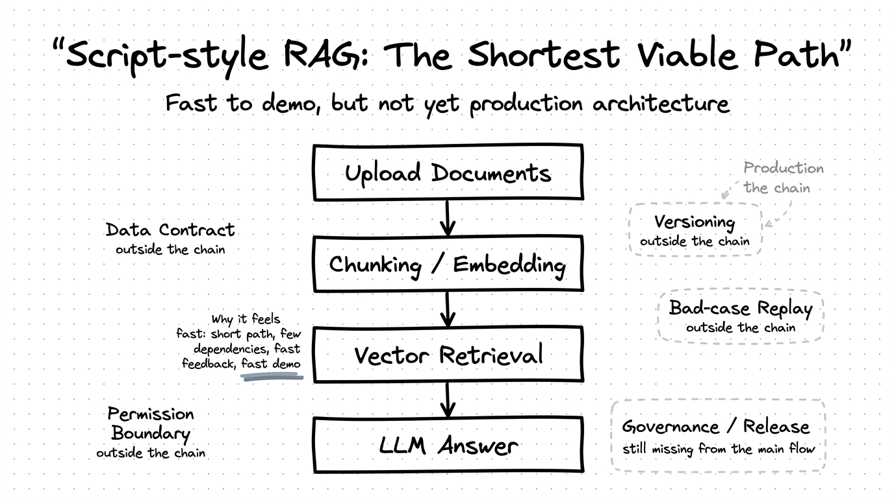
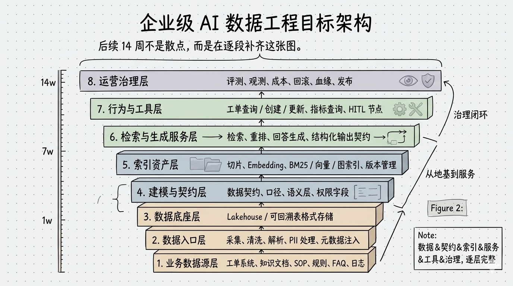

路线先于技巧：先回答企业 AI 该走哪条路
一句话判断
本讲唯一主判断
企业 AI 的主问题从来不是
“模型够不够聪明”，而是“路线是不是一开始就走对了”。
“模型够不够聪明”，而是“路线是不是一开始就走对了”。
后面所有关于数据、检索、工具、评测和治理的能力，都是路线判断之后才有意义的工程层。
这节课只回答三个问题
问题 1
最短路径
为什么脚本式 RAG 很快，但迟早会撞生产墙？
问题 2
目标系统
企业级 AI 至少由哪些层组成，为什么不能只盯检索和生成？
问题 3
课程主线
后续 14 周为什么不是过度工程化，而是在补上线能力？
事故开场：Demo 能答，上线就炸
事故 1
规则漂移
症状
- 规则更新了，答案还在讲旧版本
本质原因
- 数据版本和更新链路没有正式进入系统
上线后果
- 错的不是一句回答，而是整个事实口径
事故 2
口径冲突
症状
- 同名术语跨部门口径不一致，系统却当成一个意思
本质原因
- 契约和语义层没有先写，检索只能硬拼相似度
上线后果
- 回答看起来流畅，业务却根本不敢采信
事故开场：Demo 能答，上线就炸
事故 3
权限越界
症状
- 低权限用户看到了高敏 SOP
本质原因
- 权限、PII、动作边界没有进入路线设计
上线后果
- 问题直接升级成合规和责任事故
事故 4
问题失踪
症状
- 坏例出现后根本没法复现
本质原因
- 数据、索引、Prompt、版本和 Trace 都不成链
上线后果
- 团队只能猜是哪一层漂了，优化变成碰运气
事故收口：这些炸点为什么都不是模型问题
事故收口
这些事故不是模型太弱，而是路线太短。
你如果把企业 AI 理解成 “Prompt + 向量库 + LLM”，迟早会在真实数据、权限、工具调用和治理环节撞墙。
脚本式 RAG：最短可用路径长什么样
最短路径图

脚本式 RAG 之所以快，不是因为它已经完整，而是因为数据契约、版本、权限、回放和治理这些昂贵能力都还留在链外。
三条路线总览：你不是在选技术栈，而是在选后果
路线 1
脚本式 RAG
- 适合 PoC 和内部演示
- 先回答“值不值得做”
- 一进真实权限和动作链就会集中爆炸
路线 2
服务化 RAG
- 更稳定，有 API、缓存、基本日志
- 适合试点，不等于已经有统一底座
- 解决调用稳定性，不自动解决治理闭环
路线 3
企业级 AI 数据工程平台
- 目标不是大而全，而是可追溯、可治理、可回滚
- 不是 Day 1 做完全部，而是 Day 1 就知道最终要补齐到哪里
脚本式 RAG 为什么快，为什么两周后就开始脆
快在什么地方
- 路径短，依赖少，反馈快
- 最少的数据工程就能把“会答”做出来
- 现场 Demo 通常很顺
- 启动成本极低
脆在什么地方
- 复杂度被延迟支付
- 版本、权限、坏例回放、发布边界都不清楚
- 一旦数据换批、规则更新、工具链变化，就很难复盘
- 你以为缺模型技巧，实际缺工程链
关键判断
脚本式 RAG 的风险，不是效果差，而是它会让团队误以为“剩下只是再调一调模型”。
真正的目标对象：不是一个 RAG 系统，而是一条企业 AI 数据工程链
输入资产 → 检索生成 → 工具行为 → 治理发布
数据 把输入做成可追溯资产，而不是临时喂给模型的原料。
检索与生成 让回答不仅像样，还要带证据、能回归、可校验。
工具与行为 让系统从“会答”进入“能办”，但动作权限必须前置设计。
治理与发布 把评测、Tracing、版本、回滚和责任边界收成正式上线能力。
企业级 AI 数据工程目标架构
目标总图

后续 14 周不是散点技术，而是在逐层补齐这张企业级 AI 数据工程目标架构图。
八层目标架构：基础四层先决定你有没有事实土壤
1
数据源层
- 先知道系统到底建在什么数据之上
- 明确 owner、刷新频率、使用边界
2
数据入口层
- 先把解析、清洗、PII、元数据做对
- 不要让脏输入一路往后传
3
数据底座层
- 给 time travel、回放、回滚留地方
- 不要让旧数据互相覆盖
4
契约语义层
- 统一术语、字段、权限口径
- 让“冻结 / 限制 / 挂起”不再混成一个意思
八层目标架构：后四层决定你能不能真正负责
5
索引资产层
- 把索引做成可版本化资产
- 不要留一个黑盒向量库
6
检索生成层
- 让回答带证据、可校验、可回归
- 让问题能重放
7
行为工具层
- 从“会答”进入“能办”
- 把动作分级和
HITL做成规则
8
治理发布层
- 把评测、Tracing、版本、回滚连起来
- 让责任边界真正可追
OmniSupport 映射：先看事实土壤
数据源 + 入口
先保输入
在项目里承担什么
- 接 FAQ、SOP、业务规则、工单数据
- 完成解析、清洗、PII 处理
缺了先爆什么
- 规则更新不一致，解析错误直接进索引
底座 + 契约
先保口径
在项目里承担什么
- 保留快照、统一术语、定义权限字段和业务口径
缺了先爆什么
- 同名术语冲突，旧版本无法回看，责任边界不清
OmniSupport 映射：再看检索和动作
索引 + 检索生成
先保证据
在项目里承担什么
- 管理 FAQ / SOP / 工单经验索引
- 输出带证据的结构化回答
缺了先爆什么
- 召回不可解释，证据不稳定，坏例难复现
工具行为
先保边界
在项目里承担什么
- 查询工单、建议建单、升级人工、审批节点
缺了先爆什么
- 从“会答”滑向“越权执行”
OmniSupport 映射：最后看治理发布
治理发布
先保可回滚
在项目里承担什么
- 评测、Tracing、变更记录、回滚、Runbook
缺了先爆什么
- 事故无法定位，试点永远不敢真正上线
项目定位
OmniSupport 不是主线本身，而是后续每一层能力的验证器。
每学一层，都要能回到同一个业务世界里验证它为什么必要。
三阶段演进：MVP / 可试点 / 可上线
MVP → 可试点 → 可上线
阶段 1
MVP
先证明业务问题值得做，但别假装自己已经接近上线。
- 最小检索链路
- 最小证据引用
- 最小日志与坏例记录
阶段 2
可试点
让小范围真实用户开始使用，但要先知道哪些能力已经必须进场。
- 权限过滤
- 评测基线
- 可回归、可观测
- 基本降级策略
阶段 3
可上线
纳入正式业务流程，开始真正承担发布、回滚和审计责任。
- 版本、回滚、Runbook
- 评测与发布绑定
- 动作分级与
HITL SLO、Tracing、责任边界
Week02–Week15 不是加料，而是在补链
| 周次 | 真正在补哪一层 | 对应的上线问题 |
|---|---|---|
| Week02 | 输入资产与契约 | 哪些数据配进系统，哪些输入必须带边界 |
| Week03 | 采集与原始保留 | 为什么问题出现后必须能回看原始事实 |
| Week04–08 | 湖仓、索引、检索与服务化 | 为什么索引、回答和证据要变成可交付资产 |
| Week09–10 | 工具层与动作边界 | 为什么系统从“会答”进入“能办”时要先有权限与 HITL |
| Week11–15 | 评测、Tracing、治理与发布 | 为什么上线之后最贵的是回滚、责任边界和治理闭环 |
课堂收束：后面不是过度工程化，而是在补上线级 AI 的必要能力
本讲收束
别再把企业 AI 理解成
“Prompt + 向量库 + LLM”。
“Prompt + 向量库 + LLM”。
它真正要交付的是一条从输入、契约、索引、检索、行为到治理都能负责的工程链。后面的课程，只是在逐层把这条链补完整。
Lesson04 过桥：下一讲为什么先定项目骨架与风险边界
Lesson03 已经把路线立住了
下一讲就要把路线继续收口成项目开工条件：
一个企业级 AI 项目，凭什么有资格在 Week01 就真正开工？
- 工程基线为什么不能后补
- 三类边界为什么要先写
- 项目蓝图为什么比目录树更重要